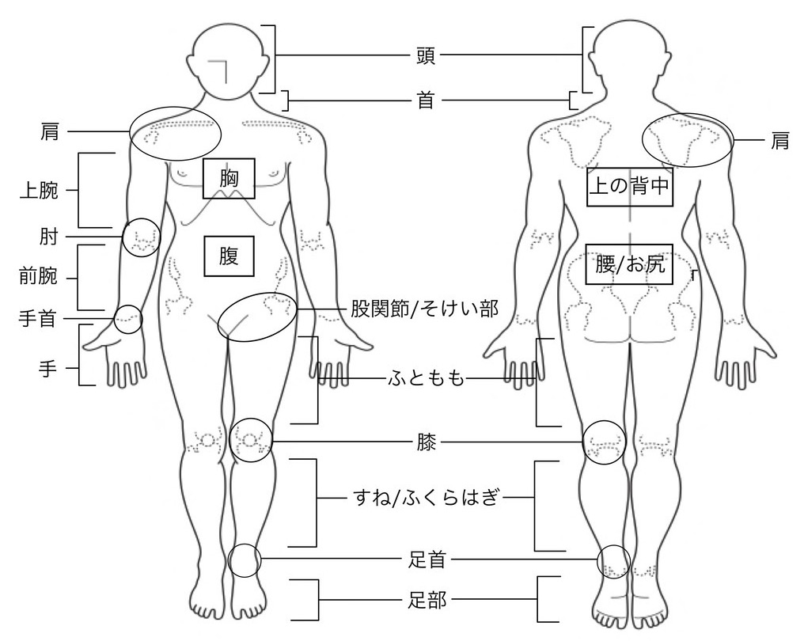

(1)質問2―練習/試合の変更
過去7日間にケガ、病気、あるいはその他の問題により、どのくらい練習や試合を変えましたか？
練習や試合を変えるとは、練習時間を減らす、強度を落とす、練習内容を変える、ポジションを変えるなどです。
(1)質問3―パフォーマンス
過去7日間にケガ、病気、あるいはその他の問題が、どのくらいパフォーマンスに影響しましたか？
パフォーマンスとは、［スポーツ種目］の動きや実力を発揮することなどです。
(1)質問4―症状
過去7日間に感じたケガや病気の症状はどのくらいでしたか？
(1)質問5
上の質問で答えた問題はケガまたは病気のどちらですか？
(1)質問6－ケガの部位
あなたのケガの部位を選んでください。もしケガがいくつかの部位におよぶ場合は一番気になる部位を選んでください。もしケガが複数ある場合は質問紙を分けて別々に回答してください。

(1)質問7－病気の症状
過去7日間に感じた主な病気の症状を選んでください。複数の選択肢を選ぶことができますが、互いに関係のない病気が複数ある場合は質問紙を分けて別々に回答してください。
(1)質問8－練習や試合を休んだ日数
過去7日間にこのケガや病気により、練習または試合を完全に休んだ日数を選んでください。
(1)質問9－報告
この質問紙を通して、このケガや病気を回答するのは初めてですか？
(1)質問10―メディカルスタッフへの相談
この問題について誰に伝えましたか。
(1)質問11
この問題について、ほかにもメディカルチームに伝えておきたいことがあれば記入してください。（メディカルチームとは、所属チームの医師やトレーナーのこととします）
(1)質問12
過去7日間にその他の病気やケガを経験しましたか？
その他の病気やケガとは、上の質問11までで答えたものとは別の病気やケガのことです。
(2)質問1―参加
過去7日間にケガ、病気、あるいはその他の問題により、練習や試合への参加に影響が出ましたか？
(2)質問2―練習/試合の変更
過去7日間にケガ、病気、あるいはその他の問題により、どのくらい練習や試合を変えましたか？
練習や試合を変えるとは、練習時間を減らす、強度を落とす、練習内容を変える、ポジションを変えるなどです。
(2)質問3―パフォーマンス
過去7日間にケガ、病気、あるいはその他の問題が、どのくらいパフォーマンスに影響しましたか？
パフォーマンスとは、［スポーツ種目］の動きや実力を発揮することなどです。
(2)質問4―症状
過去7日間に感じたケガや病気の症状はどのくらいでしたか？
(2)質問5
上の質問で答えた問題はケガまたは病気のどちらですか？
(2)質問6－ケガの部位
あなたのケガの部位を選んでください。もしケガがいくつかの部位におよぶ場合は一番気になる部位を選んでください。もしケガが複数ある場合は質問紙を分けて別々に回答してください。
(2)質問7－病気の症状
過去7日間に感じた主な病気の症状を選んでください。複数の選択肢を選ぶことができますが、互いに関係のない病気が複数ある場合は質問紙を分けて別々に回答してください。
(2)質問8－練習や試合を休んだ日数
過去7日間にこのケガや病気により、練習または試合を完全に休んだ日数を選んでください。
(2)質問9－報告
この質問紙を通して、このケガや病気を回答するのは初めてですか？
(2)質問10―メディカルスタッフへの相談
この問題について誰に伝えましたか。
(2)質問11
この問題について、ほかにもメディカルチームに伝えておきたいことがあれば記入してください。（メディカルチームとは、所属チームの医師やトレーナーのこととします）
(2)質問12
過去7日間にその他の病気やケガを経験しましたか？
その他の病気やケガとは、上の質問11までで答えたものとは別の病気やケガのことです。
(3)質問1―参加
過去7日間にケガ、病気、あるいはその他の問題により、練習や試合への参加に影響が出ましたか？
(3)質問2―練習/試合の変更
過去7日間にケガ、病気、あるいはその他の問題により、どのくらい練習や試合を変えましたか？
練習や試合を変えるとは、練習時間を減らす、強度を落とす、練習内容を変える、ポジションを変えるなどです。
(3)質問3―パフォーマンス
過去7日間にケガ、病気、あるいはその他の問題が、どのくらいパフォーマンスに影響しましたか？
パフォーマンスとは、［スポーツ種目］の動きや実力を発揮することなどです。
(3)質問4―症状
過去7日間に感じたケガや病気の症状はどのくらいでしたか？
(3)質問5
上の質問で答えた問題はケガまたは病気のどちらですか？
(3)質問6－ケガの部位
あなたのケガの部位を選んでください。もしケガがいくつかの部位におよぶ場合は一番気になる部位を選んでください。もしケガが複数ある場合は質問紙を分けて別々に回答してください。
(3)質問7－病気の症状
過去7日間に感じた主な病気の症状を選んでください。複数の選択肢を選ぶことができますが、互いに関係のない病気が複数ある場合は質問紙を分けて別々に回答してください。
(3)質問8－練習や試合を休んだ日数
過去7日間にこのケガや病気により、練習または試合を完全に休んだ日数を選んでください。
(3)質問9－報告
この質問紙を通して、このケガや病気を回答するのは初めてですか？
(3)質問10―メディカルスタッフへの相談
この問題について誰に伝えましたか。
(3)質問11
この問題について、ほかにもメディカルチームに伝えておきたいことがあれば記入してください。（メディカルチームとは、所属チームの医師やトレーナーのこととします）
(3)質問12
過去7日間にその他の病気やケガを経験しましたか？
その他の病気やケガとは、上の質問11までで答えたものとは別の病気やケガのことです。